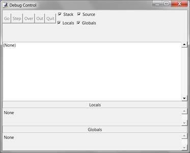
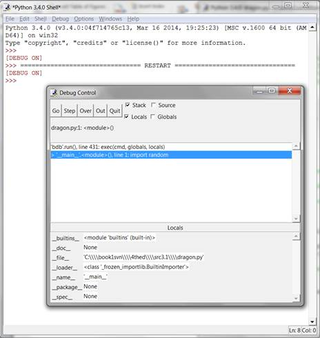
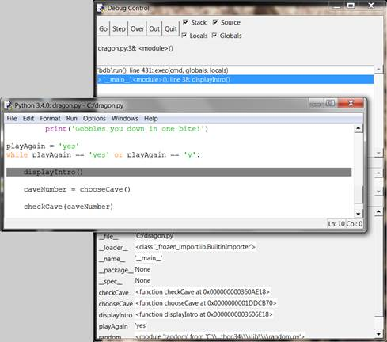
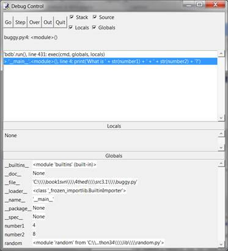
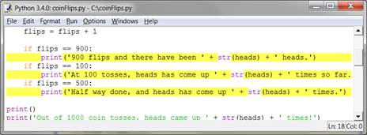

|
|
Chapter 7 |
Using the Debugger |
Topics Covered In This Chapter:
· 3 Different Types of Errors
· IDLE’s Debugger
· Stepping Into, Over, and Out
· Go and Quit
· Break Points
“On two occasions I have been asked, 'Pray, Mr. Babbage, if you put into the machine wrong figures, will the right answers come out?' I am not able rightly to apprehend the kind of confusion of ideas that could provoke such a question.”
-Charles Babbage, 19th century originator the concept of a programmable computer.
If you enter the wrong code, the computer won’t give you the right program. A computer program will always do what you tell it to, but what you tell the program to do might not be the same as what you wanted the program to do. These errors are bugs in a computer program. Bugs happen when the programmer has not carefully thought about what exactly the program is doing. There are three types of bugs that can happen with your program:
· Syntax Errors are a type of bug that comes from typos. When the Python interpreter sees a syntax error, it is because your code isn’t written in proper Python language. A Python program with even a single syntax error won’t run.
· Runtime Errors are bugs that happen while the program is running. The program will work up until it reaches the line of code with the error, and then the program terminates with an error message (this is called crashing). The Python interpreter will display a “traceback” and show the line where the problem happens.
· Semantic Errors are the trickiest to fix. These bugs don’t crash the program, but it isn’t doing what the programmer intended for the program to do. For example, if the programmer wants the variable total to be the sum of the values in variables a, b, and c but writes total = a * b * c, then the value in total will be wrong. This could crash the program later on, but it is not immediately obvious where the semantic bug happened.
Finding bugs in a program can be hard, if you even notice them at all! When running your program, you may discover that sometimes functions are not called when they are supposed to be, or maybe they are called too many times. You may code the condition for a while loop wrong, so that it loops the wrong number of times. (A loop in your program that never exits is a kind of bug called an infinite loop. To stop this program, you can press Ctrl-C in the interactive shell to terminate the program.) Any of these things could mistakenly happen in your code if you are not careful.
In fact, from the interactive shell, go ahead and create an infinite loop by typing this code in (you have to press enter twice to let the interactive shell know you are done typing in the while-block:
>>> while True:
... print('Press Ctrl-C to stop this infinite loop!!!')
...
Now press and hold down the Ctrl key and press the C key to stop the program. The interactive shell will look like this:
Press Ctrl-C to stop this infinite loop!!!
Press Ctrl-C to stop this infinite loop!!!
Press Ctrl-C to stop this infinite loop!!!
Press Ctrl-C to stop this infinite loop!!!
Press Ctrl-C to stop this infinite loop!!!
Traceback (most recent call last):
File "<pyshell#1>", line 1, in <module>
while True: print('Press Ctrl-C to stop this infinite loop!!!')
KeyboardInterrupt
It can be hard to figure out how your code could be causing a bug. The lines of code get executed quickly and the values in variables change so often. A debugger is a program that lets you step through your code one line at a time in the same order that Python executes them. The debugger also shows you what values are stored in variables at each step.
Starting the Debugger
In IDLE, open the Dragon Realm game you made in the last chapter. After opening the dragon.py file, click on the Debug ► Debugger to make the Debug Control window appear (Figure 7-1).

Figure 7-1: The Debug Control window.

Figure 7-2: Running the Dragon Realm game under the debugger.
Now when you run the Dragon Realm game by pressing F5, IDLE’s debugger will activate. This is called running a program “under a debugger”. In the Debug Control window, check the Source and Globals checkboxes.
When you run Python programs under the debugger, the program will stop before it executes the first instruction. If you click on the file editor window's title bar (and you’ve checked the Source checkbox in the Debug Control window), the first instruction is highlighted in gray. The Debug Control window shows the execution is on line 1, which is the import random line.
The debugger lets you execute one instruction at a time. This is called stepping. To execute a single instruction, click the Step button in the Debug Window. Go ahead and do this now. Python will execute the import random instruction, and then stop before it executes the next instruction. The Debug Control window will show the execution is now on line 2, the import time line. Click the Quit button to terminate the program for now.
Here is a summary of what happens when you click the Step button when you run the Dragon Realm game under a debugger. Press F5 to start running Dragon Realm again, then follow these instructions:
1. Click the Step button twice to run the two import lines.
2. Click the Step button three more times to execute the three def statements.
3. Click the Step button again to define the playAgain variable.
4. Click Go to run the rest of the program, or click Quit to terminate the program.
The Debug Control window will show you what line is about to be executed when you click the Step button in the Debug Control window. The debugger skipped line 3 because it’s a blank line. Notice you can only step forward with the debugger, you cannot go backwards.
Globals Area
The Globals area in the Debug Control window is where all the global variables can be seen. Remember, global variables are the variables that are created outside of any functions (that is, in the global scope).
As the three def statements execute and define functions, they will appear in the Globals area of the Debug Control window.
The text next to the function names in the Globals area will look like “<function checkCave at 0x012859B0>“. The module names also have confusing looking text next to them, such as “<module 'random' from 'C:\\Python31\\lib\\random.pyc'>“. You don’t need to know what it means to debug your programs. Just seeing that the functions and modules are there in the Global area will tell you if the function has been defined or the module has been imported.
You can also ignore the __builtins__, __doc__, and __name__ lines in the Global area. (Those are variables that appear in every Python program.)
When the playAgain variable is created it will show up in the Global area. Next to the variable name will be the string 'yes'. The debugger lets you see the values of all the variables in the program as the program runs. This is useful for fixing bugs.
Locals Area
There is also a Locals area, which shows you the local scope variables and their values. The local area will only have variables in it when the program execution is inside of a function. When the execution is in the global scope, this area is blank.
The Go and Quit Buttons
If you get tired of clicking the Step button repeatedly and just want the program to run normally, click the Go button at the top of the Debug Control window. This will tell the program to run normally instead of stepping.
To terminate the program entirely, just click the Quit button at the top of the Debug Control window. The program will exit immediately. This is helpful if you must start debugging again from the beginning of the program.
Stepping Into, Over, and Out
Start the Dragon Realm program with the debugger. Keep stepping until the debugger is at line 38. As shown in Figure 7-3, this is the line with displayIntro(). When you click Step again, the debugger will jump into this function call and appear on line 5, the first line in the displayIntro() function. The kind of stepping you have been doing is called stepping into. This is different from stepping over, explained next.

Figure 7-3: Keep stepping until you reach line 38.
When the execution is paused at line 5, clicking Step one more time will step into the print() function. The print() function is one of Python’s built-in functions, so it isn’t useful to step through with the debugger. Python’s own functions such as print(), input(), str(), or random.randint() have been carefully checked for errors. You can assume they’re not the parts causing bugs in your program.
So you don’t want to waste time stepping through the internals of the print() function. So instead of clicking Step to step into the print() function’s code, click Over. This will step over the code inside the print() function. The code inside print() will be executed at normal speed, and then the debugger will pause once the execution returns from print().
Stepping over is a convenient way to skip stepping through code inside a function. The debugger will now be paused at line 40, caveNumber = chooseCave().
Click Step one more time to step into the chooseCave() function. Keep stepping through the code until line 15, the input() call. The program will wait until you type a response into the interactive shell, just like when you run the program normally. If you try clicking the Step button now, nothing will happen because the program is waiting for a keyboard response.
Click back on the interactive shell window and type which cave you want to enter. The blinking cursor must be on the bottom line in the interactive shell before you can type. Otherwise the text you type will not appear.
Once you press enter, the debugger will continue to step lines of code again. Click the Out button on the Debug Control window. This is called stepping out, because it will cause the debugger to step over as many lines as it needs to until execution has returned from the function it is in. After it jumps out, the execution will be on the line after the line that called the function.
For example, clicking Out inside the displayIntro() function on line 6 would step until the function returned to the line after the call to displayIntro(). Stepping out can save you from having to click Step repeatedly to jump out of the function.
If you are not inside a function, clicking Out will cause the debugger will execute all the remaining lines in the program. This is the same behavior as clicking the Go button.
Here’s a recap of what each button does:
· Go - Executes the rest of the code as normal, or until it reaches a break point. (Break points are described later.)
· Step - Step one instruction. If the line is a function call, the debugger will step into the function.
· Over - Step one instruction. If the line is a function call, the debugger won’t step into the function, but instead step over the call.
· Out - Keeps stepping over lines of code until the debugger leaves the function it was in when Out was clicked. This steps out of the function.
· Quit - Immediately terminates the program.
The debugger can help you find the cause of bugs in your program. As an example, here is a small program with a bug. The program comes up with a random addition problem for the user to solve. In the interactive shell window, click on File, then New Window to open a new file editor window. Type this program into that window, and save the program as buggy.py.
buggy.py
1. import random
2. number1 = random.randint(1, 10)
3. number2 = random.randint(1, 10)
4. print('What is ' + str(number1) + ' + ' + str(number2) + '?')
5. answer = input()
6. if answer == number1 + number2:
7. print('Correct!')
8. else:
9. print('Nope! The answer is ' + str(number1 + number2))
Type the program as it is above, even if you can already tell what the bug is. Then trying running the program by pressing F5. This is a simple arithmetic quiz that comes up with two random numbers and asks you to add them. Here’s what it might look like when you run the program:
What is 5 + 1?
6
Nope! The answer is 6
That’s a bug! The program doesn’t crash but it is not working correctly. The program says the user is wrong even if they type the correct answer.
Running the program under a debugger will help find the bug’s cause. At the top of the interactive shell window, click on Debug ► Debugger to display the Debug Control window. In the Debug Control window, check all four checkboxes (Stack, Source, Locals, and Globals). This makes the Debug Control window provide the most information. Then press F5 in the file editor window to run the program. This time it will be run under the debugger.
1. import random
The debugger starts at the import random line. Nothing special happens here, so just click Step to execute it. You will see the random module added to the Globals area.
2. number1 = random.randint(1, 10)
Click Step again to run line 2. A new file editor window will appear with the random.py file. You have stepped inside the randint() function inside the random module. Python’s built-in functions won’t be the source of your bugs, so click Out to step out of the randint() function and back to your program. Then close the random.py file's window.
3. number2 = random.randint(1, 10)
Next time, you can click Over to step over the randint() function instead of stepping into it. Line 3 is also a randint() function call. Skip stepping into this code by clicking Over.
4. print('What is ' + str(number1) + ' + ' + str(number2) + '?')
Line 4 is a print() call to show the player the random numbers. You know what numbers the program will print even before it prints them! Just look at the Globals area of the Debug Control window. You can see the number1 and number2 variables, and next to them are the integer values stored in those variables.
The number1 variable has the value 4 and the number2 variable has the value 8. When you click Step, the program will display the string in the print() call with these values. The str() function will concatenate the string version of these integers. When I ran the debugger, it looked like Figure 7-4. (Your random numbers will probably be different.)

Figure 7-4: number1 is set to 4 and number2 is set to 8.
5. answer = input()
Clicking on Step from line 5 will execute input(). The debugger waits until the player enters a response into the program. Enter the correct answer (in my case, 12) into the interactive shell window. The debugger will resume and move down to line 6.
6. if answer == number1 + number2:
7. print('Correct!')
Line 6 is an if statement. The condition is that the value in answer must match the sum of number1 and number2. If the condition is True, then the debugger will move to line 7. If the condition is False, the debugger will move to line 9. Click Step one more time to find out where it goes.
8. else:
9. print('Nope! The answer is ' + str(number1 + number2))
The debugger is now on line 9! What happened? The condition in the if statement must have been False. Take a look at the values for number1, number2, and answer. Notice that number1 and number2 are integers, so their sum would have also been an integer. But answer is a string.
That means that answer == number1 + number2 would have evaluated to '12' == 12. A string value and an integer value will always not equal each other, so the condition evaluated to False.
That is the bug in the program. The bug is that the code has answer when it should have int(answer). Change line 6 to int(answer) == number1 + number2, and run the program again.
What is 2 + 3?
5
Correct!
This time, the program worked correctly. Run it one more time and enter a wrong answer on purpose. This will completely test the program. You’ve now debugged this program! Remember, the computer will run your programs exactly as you type them, even if what you type isn’t what you intend.
Stepping through the code one line at a time might still be too slow. Often you’ll want the program to run at normal speed until it reaches a certain line. A break point is set on a line when you want the debugger to take control once execution reaches that line. If you think there’s a problem with your code on, say, line 17, just set a break point on line 17 (or maybe a few lines before that).
When execution reaches that line, the debugger will “break into the debugger”. Then you can step through lines one at a time to see what is happening. Clicking Go will execute the program normally until it reaches another break point or the end of the program.
To set a break point, right-click on the line in the file editor and select Set Breakpoint from the menu that appears. The file editor will highlight that line with yellow. You can set break points on as many lines as you want. To remove the break point, click on the line and select Clear Breakpoint from the menu that appears.

Figure 7-5: The file editor with two break points set.
Here is a program that simulates coin flips by calling random.randint(0, 1). The function returning the integer 1 will be “heads” and returning the integer 0 will be “tails”. The flips variable will track how many coin flips have been done. The heads variable will track how many came up heads.
The program will do “coin flips” one thousand times. This would take a person over an hour to do, but the computer can do it in one second! Type in the following code into the file editor and save it as coinFlips.py. If you get errors after typing this code in, compare the code you typed to the book’s code with the online diff tool at http://invpy.com/diff/coinflips.
coinFlips.py
1. import random
2. print('I will flip a coin 1000 times. Guess how many times it will come up heads. (Press enter to begin)')
3. input()
4. flips = 0
5. heads = 0
6. while flips < 1000:
7. if random.randint(0, 1) == 1:
8. heads = heads + 1
9. flips = flips + 1
10.
11. if flips == 900:
12. print('900 flips and there have been ' + str(heads) + ' heads.')
13. if flips == 100:
14. print('At 100 tosses, heads has come up ' + str(heads) + ' times so far.')
15. if flips == 500:
16. print('Half way done, and heads has come up ' + str(heads) + ' times.')
17.
18. print()
19. print('Out of 1000 coin tosses, heads came up ' + str(heads) + ' times!')
20. print('Were you close?')
The program runs pretty fast. It spent more time waiting for the user to press enter than doing the coin flips. Let’s say you wanted to see it do coin flips one by one. On the interactive shell's window, click on Debug ► Debugger to bring up the Debug Control window. Then press F5 to run the program.
The program starts in the debugger on line 1. Press Step three times in the Debug Control window to execute the first three lines (that is, lines 1, 2, and 3). You’ll notice the buttons become disabled because input() was called and the interactive shell window is waiting for the user to type something. Click on the interactive shell window and press enter. (Be sure to click beneath the text in the interactive shell window, otherwise IDLE might not receive your keystrokes.)
You can click Step a few more times, but you’ll find that it would take quite a while to get through the entire program. Instead, set a break point on lines 12, 14, and 16. The file editor will highlight these lines as shown in Figure 7-6.

Figure 7-6: Three break points set.
After setting the breakpoints, click Go in the Debug Control window. The program will run at normal speed until it reaches the next break point. When flip is set to 100, the condition for the if statement on line 13 is True. This causes line 14 (where there’s a break point set) to execute, which tells the debugger to stop the program and take over. Look at the Debug Control window in the Globals section to see what the value of flips and heads are.
Click Go again and the program will continue until it reaches the next break point on line 16. Again, see how the values in flips and heads have changed.
If you click Go again, the execution will continue until the next break point is reached, which is on line 12.
Summary
Writing programs is only the first part of programming. The next part is making sure the code you wrote actually works. Debuggers let you step through the code one line at a time. You can examine which lines execute in what order, and what values the variables contain. When this is too slow, you can set break points to stop the debugger only at the lines you want.
Using the debugger is a great way to understand what a program is doing. While this book provides explanations of all the game code in it, the debugger can help you find out more on your own.